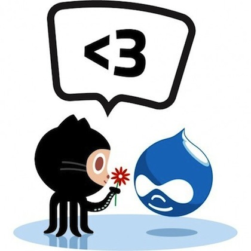

Acerca de mí

Mi nombre es Jesús Manuel Olivas
Me pueden encontrar en twitter como @jmolivas
En mi blog http://jmolivas.com
Que es Drupal ?
Drupal es un programa escrito en PHP, con licencia GNU/GPL, que se utiliza como sistema base de sitios y aplicaciones web.
Su flexibilidad lo hace que sea adecuado para realizar diferentes tipos de sitios y aplicaciones.
- CMS (Content Management System)
- Framework
- Comunidad


Software Libre
La palabra "libre" en el nombre no se refiere al precio, se refiere a la libertad.
Libertades del software libre.
- (libertad 0) - La libertad de ejecutar el programa, para cualquier propósito.
- (libertad 1) - La libertad de estudiar cómo trabaja el programa, y cambiarlo para que haga lo que usted quiera.
- (libertad 2) - La libertad de redistribuir copias.
- (libertad 3) - La libertad de mejorar el programa y publicar sus mejoras, y versiones modificadas en general, para que se beneficie toda la comunidad.
Open Source all the things
Origen
- Fundador - Dries Buytaert
- Código fuente abierto en 2001.
- Versión actual Drupal 7.19

Drupal en un CMS/CMF multipróposito.
Drupal como CMS
- Control sobre el flujo de creación, edición, borrado y publicación de contenidos.
- Categorización y organización de contenido.
- Gestión de usuarios y roles.
- Presentación de contenido en diversos formatos.
- Sistema modular y extensible.
Drupal como CMF
- Capa de abstracción sobre la base de datos.
- Sistema de plantillas (themes) separado de la lógica.
- Seguridad, control de usuarios y configuración de permisos personalizable.
- Herramientas de cache a varios niveles.
- API para desarrolladores pública y disponible: http://api.drupal.org/
Llegas por el código, te quedas por la comunidad
Ay si, ay si
Geeks are gonna geek !!!
Como aprendo Drupal ?
Ola k ase
Escribiendo todo desde cero o k ase
Acércate a la Comunidad
- Sitio oficial Drupal.org - http://drupal.org
- Asociación de Drupal - https://association.drupal.org
- Comunidad - http://drupal.org/community
- Grupos - http://groups.drupal.org
- Grupo México - http://groups.drupal.org/mexico
- Grupo Español - http://groups.drupal.org/spanish
- IRC - #drupal #drupal-es (irc.freenode.net)
- Eventos DrupalCon, Summit, Camps, Meetups
http://groups.drupal.org/events
Conoce la manera en que Drupal funciona
- Construye tus aplicaciones no tus herramientas.
- Utiliza buenas prácticas.
- Elimina el síndrome NIH (Not Invented Here) reemplazándolo con el PIE (Proudly Invented Elsewhere).
- RTFM (lee el maldito manual).
- Acercate a quiénes conocen y utilizan las herramientas.
- Haz preguntas inteligentes.
The Drupal Way
Escenario ideal para un sitio en Drupal.
Y donde busco módulos ?
Ya encontré uno y ahora qué hago ?
- Verificar estatus (Maintenance & Development)
- Revisar Issues & Reporte de Bugs
- Verificar actividad
- Lee el README
- Cuando tengas dudas -> pregunta

En donde se instalan los módulos
Módulos contribuidos
sites/all/modules/sites/all/modules/contrib/
Módulos personalizados
sites/all/modules/custom/Temas
sites/all/themes/Qué habilidades no Drupaleras necesito?
Qué necesito saber ?
- HTML / CSS / Javascript / PHP
- Un buen editor de código.
- Firebug o Chrome Inspector y Drush.
- Disposición a romper cosas.
Ambiente de desarrollo
- Trabaja loca NO más FTP.
- Utiliza control de versiones.
- Drush, Drush, Drush & Drush.
- No te arrepentirás de aprender a utilizar la consola.
Octocat love Drupal
 http://try.github.com/Genera memoria muscular.
Dedica un tiempo en explorar y conocer tus herramientas de desarrollo. Eclipse, Sublime Text, Vim, PHPStorm, Netbeans, NotePad++.

Estructura tu contenido
- Separa tu contenido en piezas que puedas controlar.
- La sección de contenido no es un caja negra los WYSIWYGs son malvados, pero en algunas ocasiones son necesarios.
- Piensa en mobil primero y depués en el resto de los dispositivos.
- Considera a todos tus usuarios administardores y visitantes (autenticados y no autenticados)
Desarrolla en base a features
Básicamente se trata de realizar tres pasos los cuales tendrás que repetir.
- Crea tu tipo de contenido (Entity/Content-Type).
- Construye tu vista (View).
- Crea tu formato de salida o presentación. (Layout)
- Aplica el tema.
- Repite los pasos anteriores
Controla tu layout en base a configuración
- Panels, Panelizer, Panopoly.
- Context.
- Omega.
- Delta.
- Views.
- Display Suite.
- Features
Por que !@#$%^&* mi sitio es lento
Errores comunes y fallas en desempeño
Busca lo que parezca obvio primero
- Estas utilizando cache ?
- Estas compactanto CSS y JS ?
- Tus imágenes son enormes ? (Media Styles)
Parecen preguntas tontas pero ...
Construye y libera
Flujo de trabajo
- Utiliza gestor de versiones.
- Ideal para grupos de trabajo y trabajo remoto.
- Ideal para revertir los cambios.
Entornos de desarrollo
- El Código en dirección Dev ⇒ Test ⇒ Live.
- La Dase de Datos en dirección Dev ⇐ Test ⇐ Live.
Con un gran poder, llega una gran responsabilidad
Descubre, crea y comparte
Tiempo de compartir
- Comenta tu código, tu yo del futuro lo agradecerá.
- Antes de hacer algo, considere se usted puede hacer más fácil de entender. Escribir código para uno mismo es una mala idea.
- Utiliza nombre de clases descriptivas
http://drupal.org/coding-standards
http://drupal.org/project/coder
http://drupal.org/project/examples
Estandares de GIT
- Haz commit aislados y frecuentemente.
- Escribir buenos mensajes para tus commits, utilice referencia fuera de la información a información como (número de ticket ó Drupal.org issues).
- Elimina las cosas que no necesitas con una commit adecuado y no sólo los comentes
Tiempo de pagar
- Participar en los isses queue y con la documentación.
- Si utilizaste un patch haz comentarios, sin importar si funcionó o no.
- Si escribes un patch, publícalo.
- Ayuda con la documentación, escribe un blog.
- Organiza y asiste a las reuniones de la comunidad.
Y U NO Drupal

El developer debe ser holgazán, claro en el buen sentido de la palabra ... NO eres mejor que un ejército de desarrolladores.
Gracias
Y U NO Drupal - DrupalDay 2013
Jesús Manuel Olivas | @jmolivas | http://jmolivas.com
Patrocinadores